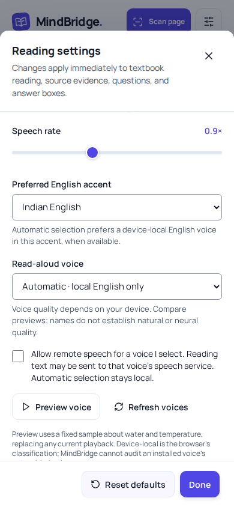

The original queue cancelled and recreated speech after every sentence. Its default speed was 1×; an unspecified browser voice could be used, there were no boundary listeners, and mode cleanup compared sentence IDs rather than text. These were confirmed in the implementation. Robotic timbre itself is device dependent and was not diagnosed by listening to this headless environment.
Automatic selection now uses device-local English voices, preferring the chosen Indian, British or American accent. A saved explicit voice is retained; missing voices are reported rather than silently replaced. Device-local, remote and unknown-location voices are labelled using browser metadata. Remote/unknown-location voices require explicit consent and selection. The browser’s localService flag is not an independent audit of a voice engine’s network behavior. No paid service or backend speech integration was added.
New visitors start at 0.9×, with pitch 1. Existing saved speeds remain intentional preferences. Voice previews use a fixed, nonpersonal sentence. Preview replaces current playback and stops when Settings closes. Names are not treated as evidence of neural or natural quality.
The first sentence establishes whether a voice supplies usable boundary events. When available, automatic playback connects up to four sentences within one source passage and paragraph, with bounded utterance lengths. Word/sentence event offsets map to displayed sentences using actual spoken-string ranges, including unit expansions. No estimated timing is used. Without boundaries, playback remains sentence based. If a previously working voice omits boundaries, subsequent playback falls back; timing event quality can still vary by voice. Sentence playback can also be selected explicitly.
Common units such as mL, mg, kg and °C are expanded only in spoken text. Abbreviations and decimals avoid needless sentence splits; displayed original and generated content remains unchanged. Very long sentences continue in bounded pieces without losing characters. Cancels occur for user transport actions, mode/content changes and route cleanup, rather than normal sentence completion. Duplicate and stale callbacks are guarded.
Production build passed; all 49 unit tests and all 35 Chromium browser tests passed. The existing main-bundle size advisory remains.
Unit tests cover local/remote policy, asynchronous voice loading, selection, speed/pitch, sentence grouping, UTF-16 offsets, unit pronunciation mapping, long text, native pause/resume, configuration changes, cancellation, errors and stale events. Chromium speech mocks exercise original/simplified modes, highlights, voice preview, consent, route cleanup and mobile Settings. These tests establish control behavior, not audible quality. No live AI or remote TTS calls were made.
Actual mobile voice-settings screenshot
